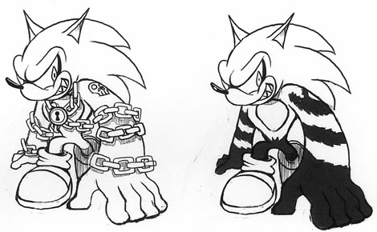
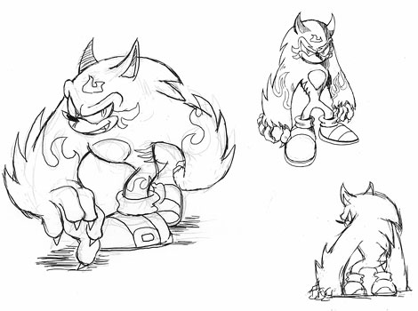
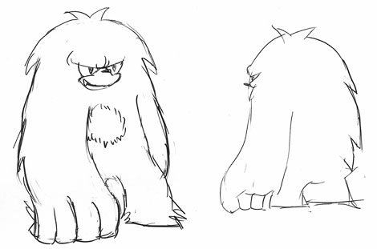

『発売2日前☆ ウェアホッグの秘密をハミだし！(後編)』
2009年02月17日
こんにちは！ マツバラです！
PS3/Xbox360版『SWA』発売まで
あと2日となりました！
こんにちは、ヨシノです。
前回に引き続き、ゲストの棚橋さんに
ウェアホッグ初期デザインをハミだしてもらいます。
では、棚橋さん、
どうぞー！
棚橋：ははは……。
ウェアホッグの、出生の秘密。
本日の1枚目はこちらです。

おおー！
前回とは打って変わって、
ポップなワルカッコよさが滲み出てますね！
棚橋：前回のは「獣」を強調したデザイン案だけど、
これは夜になると変身するという「呪い」を強調したデザイン案。
呪い、ですか？
棚橋：そのときは、まだストーリーも固まってなかったんだけど、
夜になると何らかの呪いを受けて獣っぽくなっちゃう、っていう
イメージを伝えられてたから……
そういえば、
ソニックの「手袋」は、
かなり早い段階で取っちゃったんですね！
靴は、はいてるけどね。
棚橋：手で引っ掻くように殴るキャラクターだから、
思い切って手袋を外したんだ。
ただ、靴まで取ったら、もう「ソニック」じゃないだろコレ、ってなった(笑)
だから靴は残したなあ。
決定デザインでは、
靴もトゲトゲになってますよね？
棚橋：ワイルドにしたくてさ。
この靴のままじゃ、少し優等生っぽいかなーと……
では、まだまだいくよー。
ほい次。

ゴツーい！！
マッチョー！！
マツバラ、落ち着け。
これはだいぶ決定稿に近いですよね。
棚橋：「強いソニック」にしたかったから、全体的なフォルムを大幅に変えたんだ。
肩と頭のラインをつなげたり、胸板を広く厚くして逆三角形な体形にしたりして。
お。
棚橋さん、語るのに慣れてきましたな。
棚橋：誰のせいだよ(笑)
しかし、ワイルドに強くしていくうちに、
マツバラの言うとおり、割とゴツいイメージになったかな。
こうして色々なソニックきゅんを描いていて、
どうでした？ 苦労しましたか？
棚橋：……というか、プレッシャーはあったかもしれない。
「ソニック」は世界的に有名なキャラクターだから。
でも、それ以上に、デザイナーとしてこの仕事ができたことは誇らしい。
おっと。
男前なお言葉。
では棚橋さん、
こちらのブログをご覧の皆さまに
何かヒトコトお願い致します！
棚橋：今回のソニックは、面白さも見た目も過去最高の出来だと思います。
ただの続編とかシリーズとかで楽に済ませようなんてことはなく、
意欲的なスタッフが毎回チャレンジの連続で本気で作った結果です。
まだプレイされてない方も、是非遊んで欲しいです。
これからもソニックシリーズをよろしくお願いいたします。
棚橋さん、ありがとうございました。
いやー、満足、満足！
いろんなソニックきゅんが見られて幸せ！
……ちなみに。
こんなのもありました。

棚橋：あっ！ そ、それは！(笑)
……！？
これ……ソニッ……ク……？
イエティのようです。
迷走感が垣間見えますな。
棚橋：やめてくれ！(笑)
いや、ほら、試行錯誤中に、色々描いてみようかな、ってことで！
…………
……マツバラ。
どうしたの？
イエティソニックをにらみつけて……
……いや～、
じーっと見てたら、
この子もなかなかカワイイなって思えてきちゃって……。
（こいつ、ソニックなら何でもいいんだな）
日時: 2009年02月17日 16:00 | パーマリンク


 ソニックを愛する、元気な『SWA』2年目プランナー。
ソニックを愛する、元気な『SWA』2年目プランナー。 マイペースな『SWA』2年目プランナー。
マイペースな『SWA』2年目プランナー。
 ご意見・ご要望はこちら
ご意見・ご要望はこちら RSS
RSS